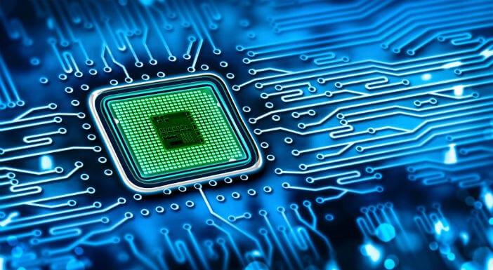
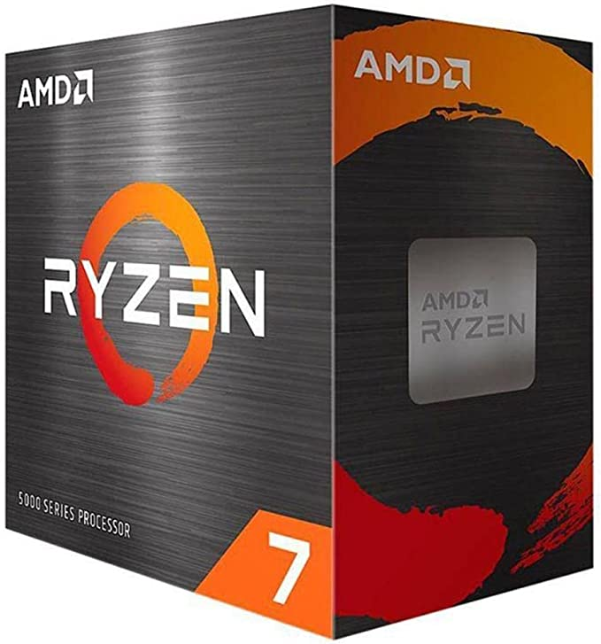

Processadores

O processador, também chamado de CPU (central processing unit), é a unidade central de processamento de um computador. De forma simples, o processador permite que vários programas sejam abertos e executados ao mesmo tempo, assim como outras atividades do computador que ocorrem sem que o usuário perceba. É ele que gerencia todas essas tarefas, conecta softwares e faz o PC funcionar, juntamente com os demais componentes.
O processador é um pequeno componente colocado na placa-mãe por meio de soquetes. Ele funciona a partir do padrão binário, no qual todos os dados recebidos são compostos por 0 e 1. Portanto, o seu funcionamento acontece a partir de cálculos matemáticos, que processam esse alto volume de dados com o auxílio de instruções armazenadas na memória interna.
PARA ESCOLHER O MELHOR PROCESSADOR DEVEMOS PRESTAR ATENÇÃO NAS SEGUINTES INFORMAÇÕES:
Utilidade:
O primeiro passo para escolher o processador ideal é definir qual a utilidade do computador, para assim não comprar um processador com desempenho inferior ao que foi solicitado para realizar as tarefas ou pagar caro em um componente de alto desempenho sem ter essa necessidade. Também é importante ficar atento a outras recomendações. Por exemplo, um PC gamer pode precisar de um processador com suporte overclock e que funcione de forma paralela a uma placa gráfica. Já um computador para edições pode exigir um chip com vários núcleos para ter um bom desempenho.Núcleo e velocidade:
Cada software utilizado possui necessidades específicas quanto a velocidade de processamento e número de núcleos. Por essa razão, vemos nomenclaturas como “Dual-Core” (2 núcleos), Quad-core (4 núcleos), podendo chegar em até 32 núcleos nos computadores de alta performanceCompatibilidade:
É muito importante que exista compatibilidade com a placa-mãe presente no computador, já que o processador é um pequeno chip que pode ser encaixado na placa-mãe ou conectado por meio de um soquete.PRODUTOS
Processador AMD Ryzen 5 5600g 3.9GHz (4.4GHz Turbo) 6 Núcleos 12 Threads AM4 com vídeo integrado

A Vista: R$ 1.019,15
A Prazo: R$ R$ 1.199,00 até 12x de R$ 99,91 sem juros
PROCESSADOR INTEL CORE I3-10100F 3.60GHz (MAX TURBO 4.30GHz) DDR4 CACHE 6MB LGA1200 COMET LAKE 10°

A Vista: R$ 559,90
A Prazo: R$ 586,62 em até 10x de R$ 58,68 sem juros
Processador AMD Ryzen 7 5700X 3.4GHz - 4.6GHz 8 Núcleos AM4
A Vista: R$ 1.580,92
A Prazo: até 10x R$ 149,50 sem juros